Cuptime
Gene
Seed
Tita
APP
在线商城
简体中文
主页
功能
工艺
设计
APP
视频
立即购买
主页
功能
工艺
设计
APP
视频
立即购买
前所未见的智能运动水杯
创新全角度饮水 / 智能饮水监测 / DPAT水平衡算法
339
元
自适应，全角度饮水
传统运动水杯只能通过吸管正置吸饮，或倒置直饮。麦开全新发明的 SmartStraw 技术，使得 gene 无论是正着、还是倒着，都可以自如地饮水，无论是户外骑行、慢跑，或是居家办公，gene 都能充分贴合你不同的运动状态，而不需要任何多余的操作。
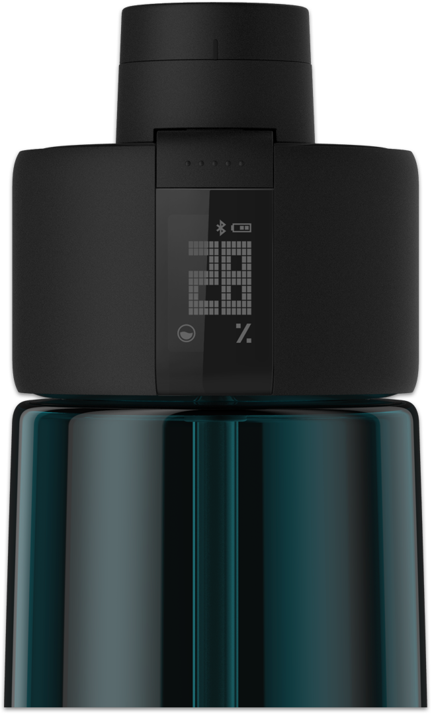
Zephair 饮水监测技术，滴滴精准
使用了麦开 Zephair 专利技术的 gene，彻底摒弃了传统转子型流量计，水流通道内没有任何结构件或电子件，平均每次饮水的监测精度却高达 ±5ml*。而且，这项技术使得 gene 清洗起来和普通运动水杯一样方便，完全不用担心转子上的水垢堆积问题。
*基于平均每次 100ml 饮水，Zephair 传感器误差范围为 ±5% 。
DPAT水平衡算法，
为运动健身加满分
合理的饮水量对于运动健身极为重要。DPAT 水平衡算法，可以根据你的实际饮水量、体质、运动量*、环境气温计算你的身体水分代谢情况，并判断你的身体是否在运动健身时处于缺水状态。
* 携带 gene 运动时，gene 可判断你的运动量；如未携带 gene 运动，则需要 Apple Health 等数据平台提供的运动量数据。
管理你的饮水目标
你原本就需要一个水杯，但 gene 却可以帮助你养成良好的饮水习惯。你可以随时看见自己每天的饮水目标完成度，还可以通过moikit APP 获得更详细的统计数据。
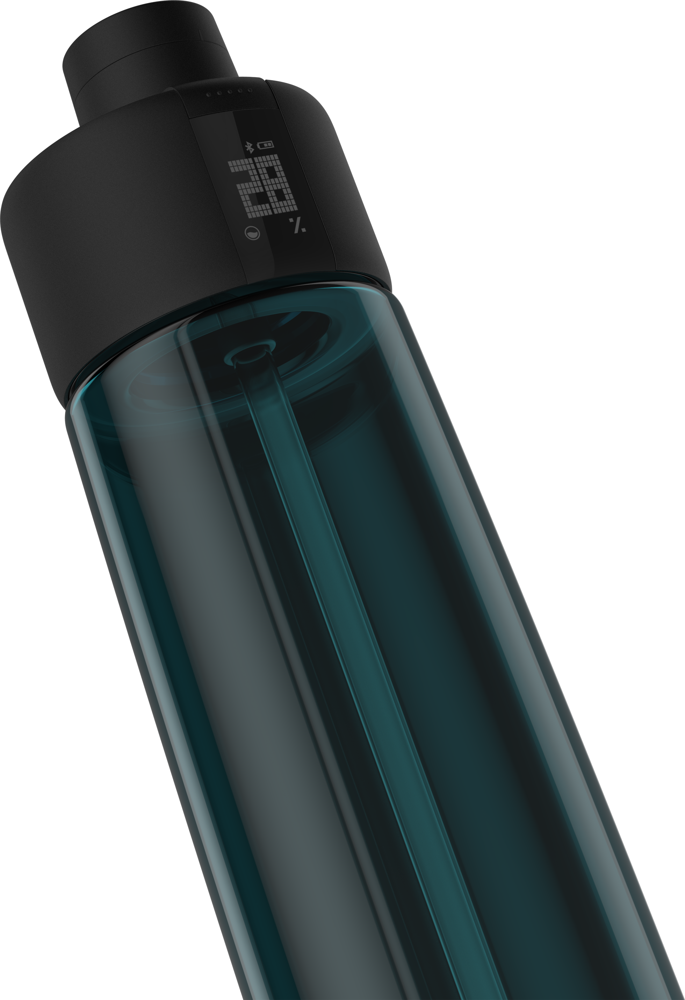
高清反显 LCD 屏
Gene 使用高清反显 LCD 屏幕，即使在阳光下，依然清晰可见。
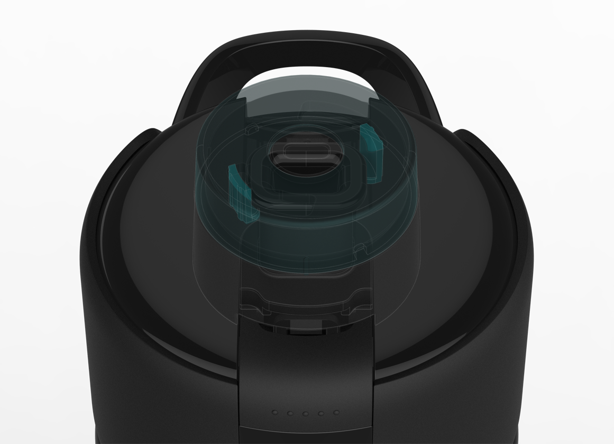
轻松一旋，拒绝倾洒
独创的弹盖安全锁扣，只需轻轻一旋，即可把盖子完全锁紧。当 gene 被放在包里的时候，你完全不用担心因为开盖按钮误触发所导致的液体倾洒问题。
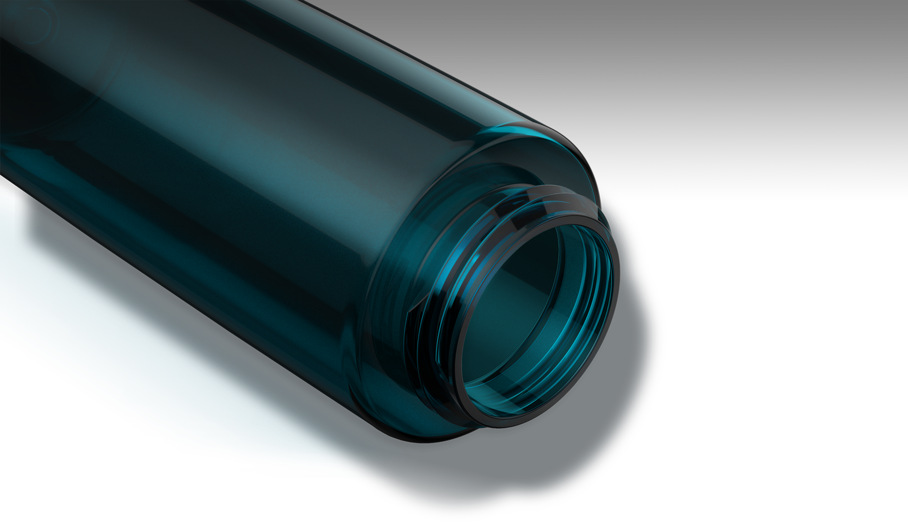
不含BPA，更具优秀的抗摔性能
gene 使用 Tritan 作为水杯的主体材料，不会在使用的过程中释放 BPA 等有害物质，通过了美国食品药品管理局 FDA 认证，也是欧美地区婴幼儿奶品的指定材质。同时，Tritan 材料的应用，还赋予 gene 强大的抗摔性能。即便在强力撞击的情况下，杯体也不会爆裂，无论是日常运动健身，还是户外探险，gene 都具有出色的稳定表现。
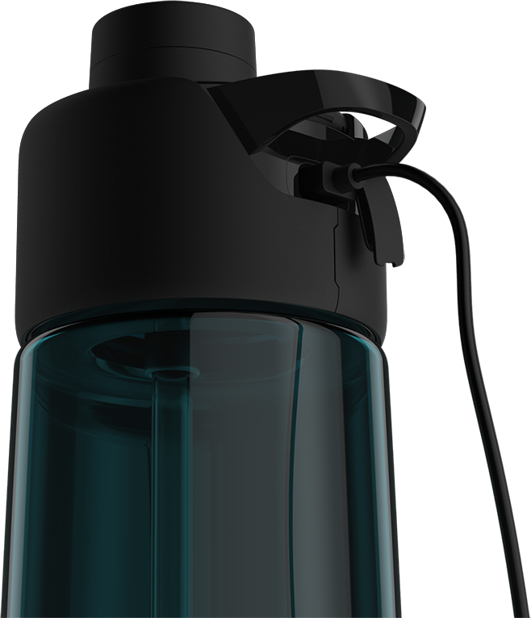
一次充电可连续使用25天
gene 选用了 150 毫安时聚合物锂电池，可通过杯盖背部的 Micro USB 防水充电口进行充电。一次充满电可满足25 天的连续使用。
整机防水，放心冲洗
gene 采取了整机防水设计，防水级别达 IPX6*，可在雨天及潮湿环境下正常使用，同时满足日常冲洗所需。
* IPX6：任意方向受到水的喷射也不会进入内部。
IPX6
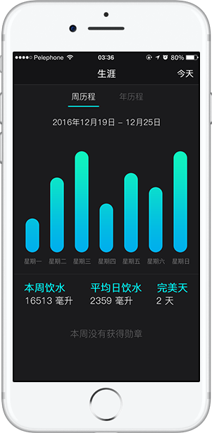
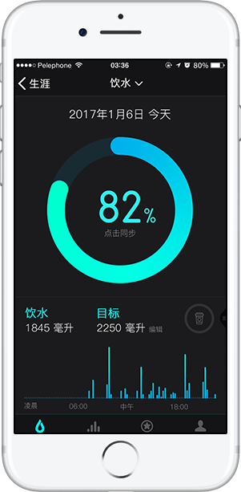
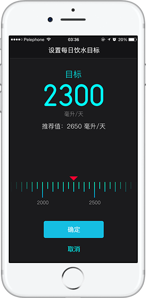
个性，强大，且乐趣横生
全新视觉、颠覆而生。现在，Moikit APP 有了更出色的表现。你可以查看每天每小时的饮水情况，它也会对你的饮水情况作出习惯分析，从而能在你需要补充水分的时间段提醒你喝水，助你养成良好的饮水习惯。
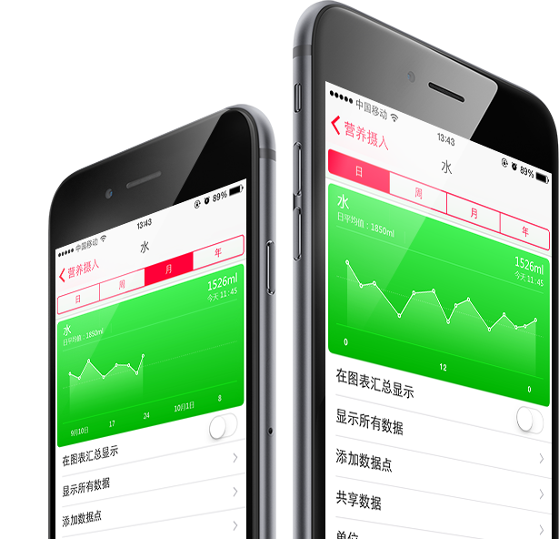
支持苹果 Healthkit
你的饮水数据可以被收集至苹果 HealthKit 平台，并在苹果 Health 应用中记录和浏览*。
* IPX6：任意方向受到水的喷射也不会进入内部。
 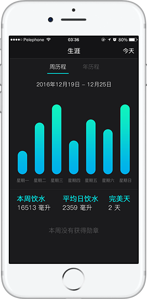
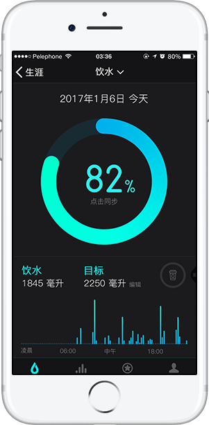
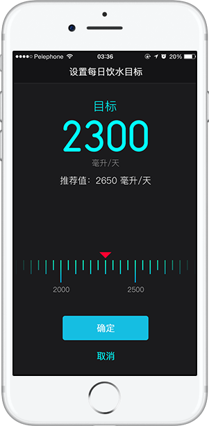
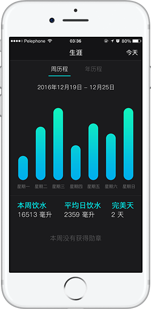
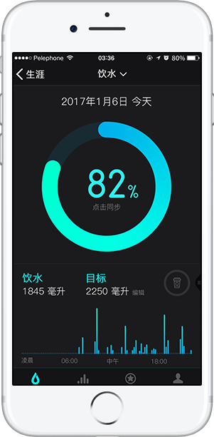
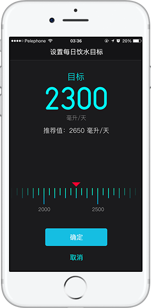